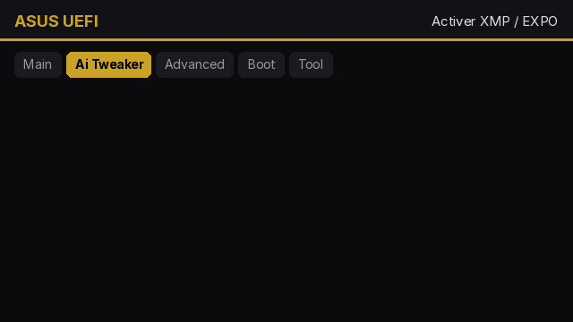

📖 Guides
Simples, vérifiés, et faisables en quelques clics avec History Launcher.
🎮 Optimiser Fortnite
- Mode de rendu Performance (Paramètres › Vidéo) si ta carte graphique a moins de 6 Go ; sinon DirectX 12.
- Distance d’affichage Lointaine, Ombres désactivées, Effets et Post-traitement Bas.
- Limite d’images = fréquence de ton écran (144, 165, 240…). Vérifie dans History › Mon PC › Vérifs que Windows n’est pas resté en 60 Hz.
- Lance-le depuis History : le boost ferme les applis inutiles et met Windows en performances élevées.
- Après une mise à jour de pilote, les premières parties saccadent : les shaders se recompilent, c’est normal.
🧠 Mettre à jour son BIOS
- Note ta carte mère (History › Mon PC › Composants).
- Télécharge la dernière version sur le site officiel de ta marque (le ticket Opti Pro donne le lien exact).
- Copie le fichier sur une clé USB formatée en FAT32.
- Redémarre, entre dans le BIOS (Suppr ou F2), ouvre l’outil de mise à jour : M-Flash (MSI), EZ Flash (ASUS), Q-Flash (Gigabyte), Instant Flash (ASRock).
- N’éteins jamais le PC pendant la mise à jour.
⚡ Activer XMP / EXPO (RAM à sa vraie vitesse)
Sans XMP, ta RAM tourne souvent à 4800 ou 2133 MHz au lieu de sa vitesse prévue. History te le signale dans Mon PC › Vérifs.

Le chemin exact pour ta marque est animé dans le ticket Opti Pro.
🖥 Brancher l’écran au bon endroit
Sur un PC avec carte graphique, le câble de l’écran doit aller sur la carte graphique (sorties horizontales en bas), pas sur la carte mère. Sinon : 2 à 5 fois moins de FPS. History le détecte tout seul.